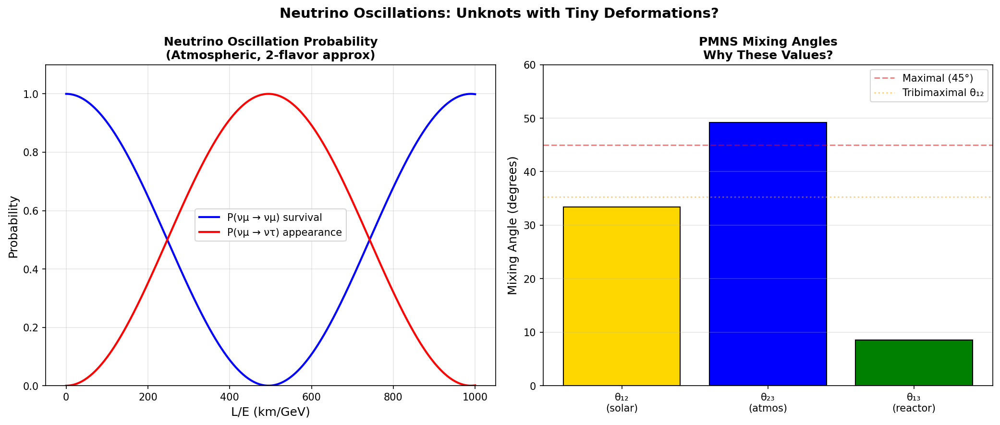

Neutrino Oscillations: Unknots with Tiny Deformations
Douglas H. M. Fulber • UFRJ • January 2026
Abstract
Neutrinos oscillate between flavors, proving they have mass. In TARDIS, neutrinos are "unknots" (trivial
topology, genus 0). The three mass eigenstates differ by tiny deformations (twist/writhe), and flavor mixing
arises from how unknots couple to charged leptons. The solar mixing angle θ₁₂ ≈ 33° hints at tribimaximal
symmetry.
1. Unknots and Mixing
Mixing angles: θ₁₂ = 33.4°, θ₂₃ = 49.2°, θ₁₃ = 8.6°. The near-maximal θ₂₃ and small θ₁₃ suggest underlying
geometric symmetry in unknot deformations.

Figure 1: Left: Oscillation probability vs baseline. Right: PMNS mixing angles with
tribimaximal reference.
2. Conclusion
Flavor = Unknot Coupling Mode
Mixing angles may derive from unknot geometry.